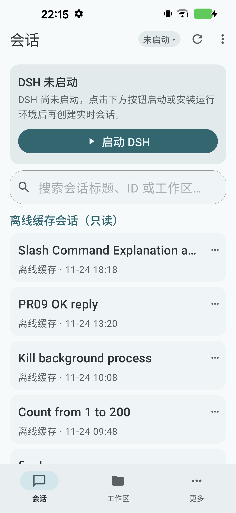
DSH 引导卡与离线会话列表在 1.3x 字体缩放下换行对齐完整。
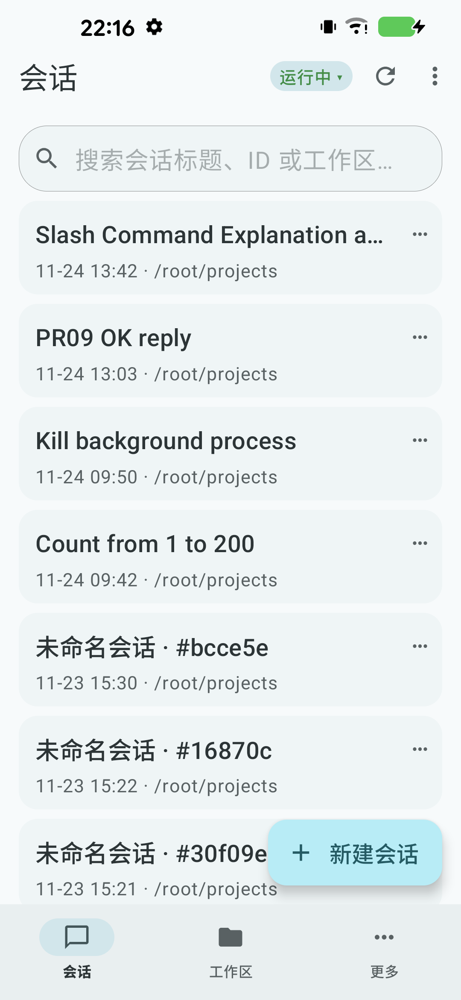
运行中徽章、时间戳工作区行与 + 新建会话 FAB 无截断重叠。
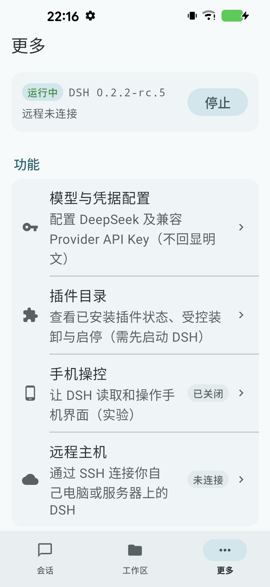
概览卡与分组菜单项换行完整，右侧状态徽章不被挤压。
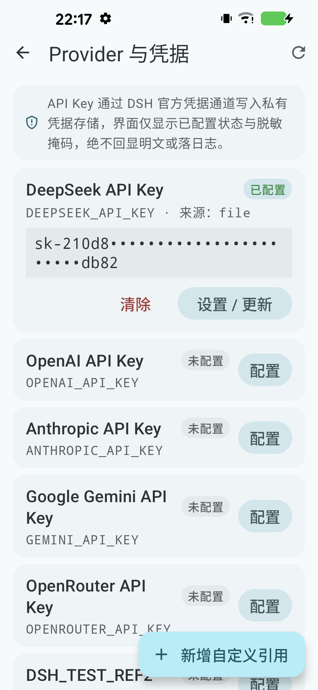
安全提示横条放开 2 行截断完整呈现；Provider 长标题下右侧徽标与配置钮稳固对齐。
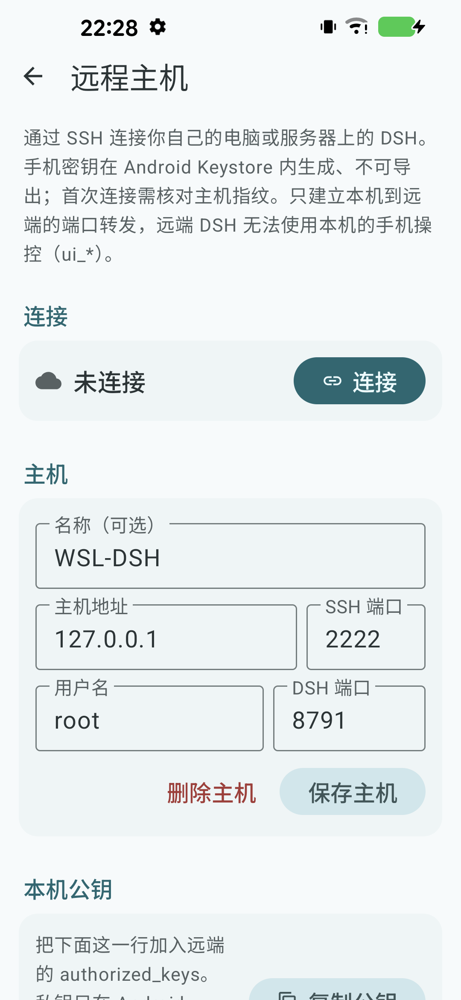
「DSH 端口」与「SSH 端口」对称精简，1.3x 字号零省略号截断。
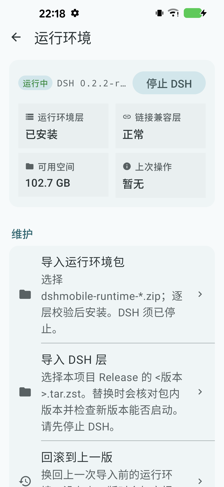
2×2 指标磁贴允许 2 行显示，标签与数值完整不裁切。
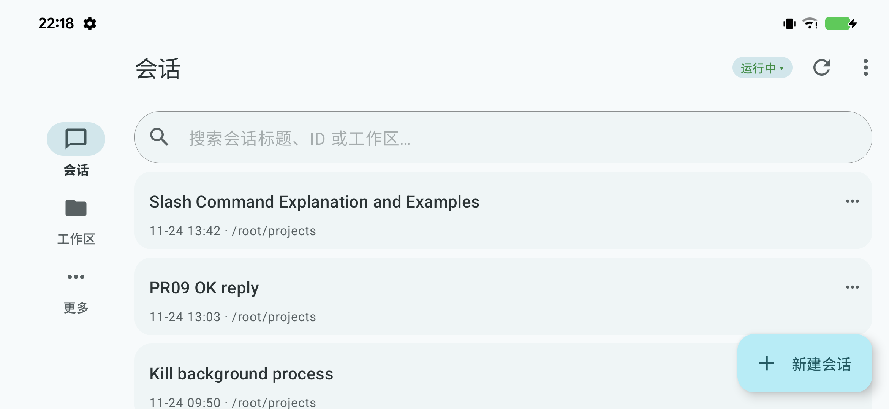
触发左侧 NavigationRailView 三栏与 720dp 内容限宽居中。
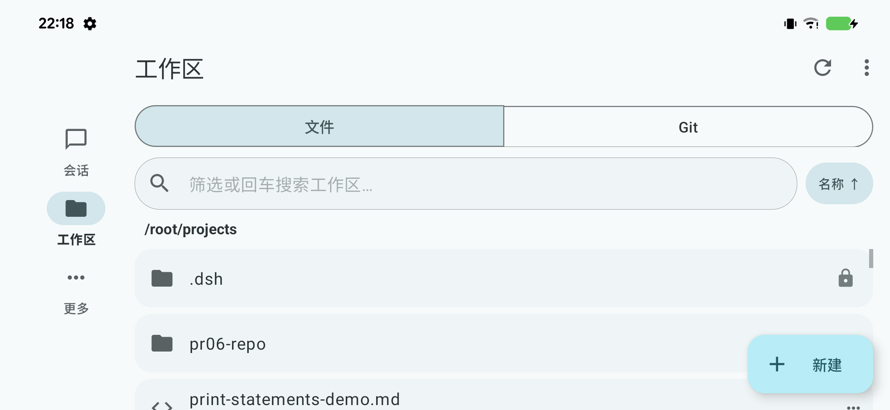
NavigationRail + 720dp 限宽文件/Git 切换条、搜索胶囊与列表。
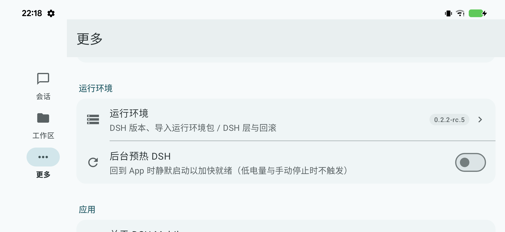
NavigationRail + 顶栏 liftOnScroll 抬升效果 + 720dp 限宽设置卡片组。
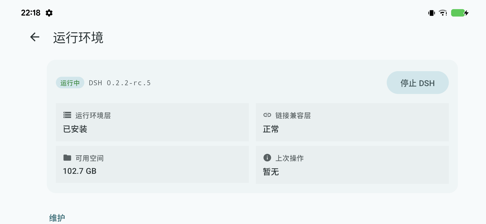
851dp 横屏下全宽顶栏 + 720dp 自动限宽居中 2×2 状态卡片。
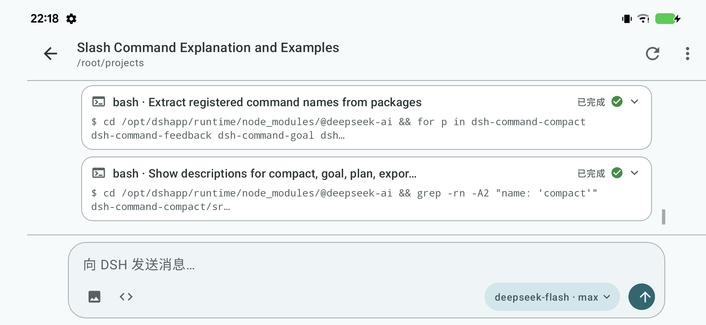
全宽单层顶栏 + 720dp 对称居中结构化工具卡片与底部融合胶囊。
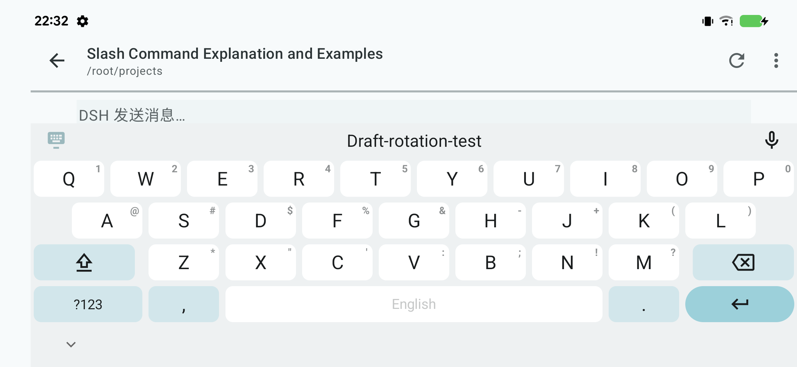
不弹全屏 ExtractUI 白框且自动隐藏快捷栏；若伴随缓存提示条会受限于 392dp 物理高度。
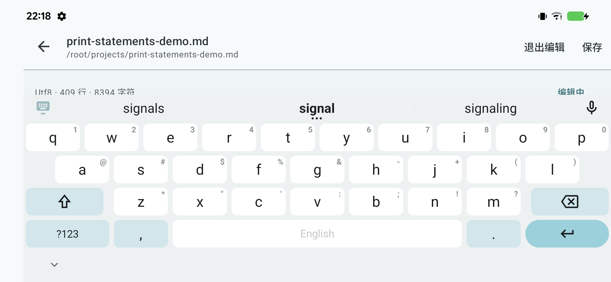
flagNoExtractUi 保留顶部「退出编辑 | 保存」与状态栏直接可见。
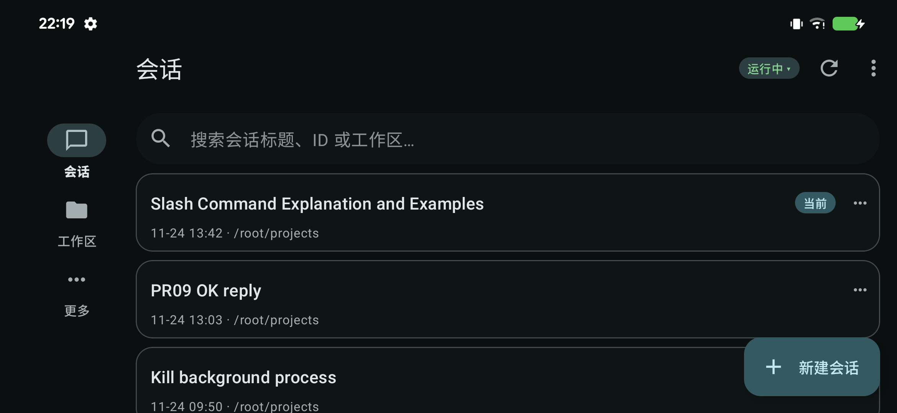
NavigationRail + OLED 1dp 卡片描边 + 720dp 居中高对比展示。
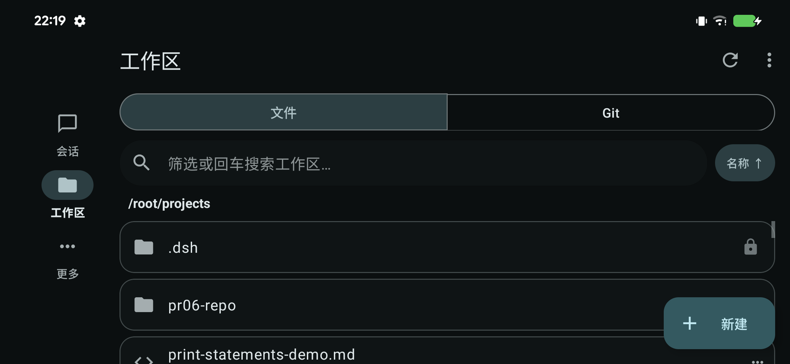
深色模式下分段开关、受保护锁标与卡片边界清晰锐利。
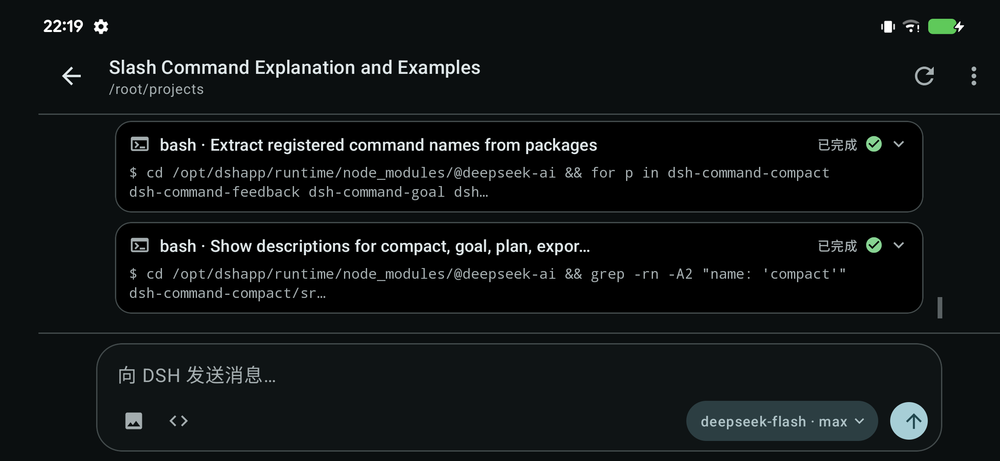
深色工具卡片、胶囊底栏与 720dp 居中对称排布对比明确。